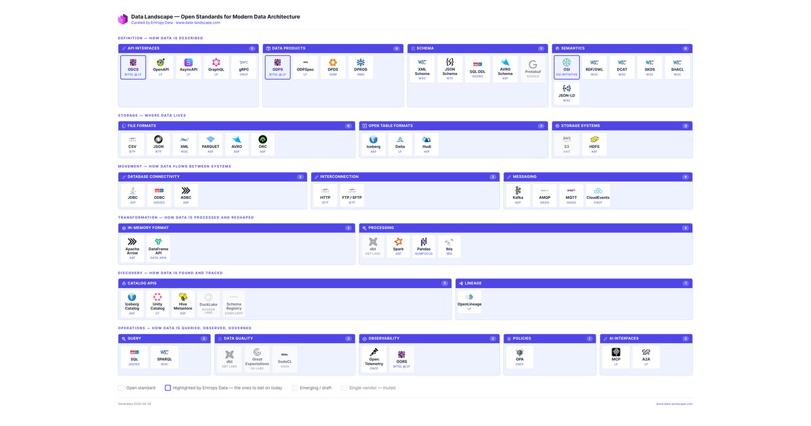
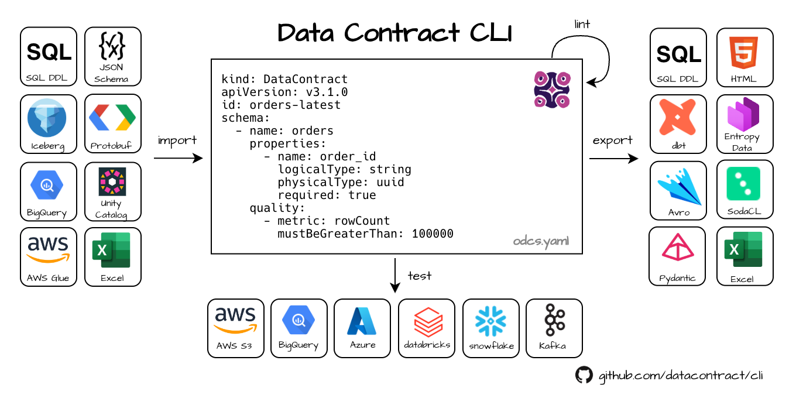
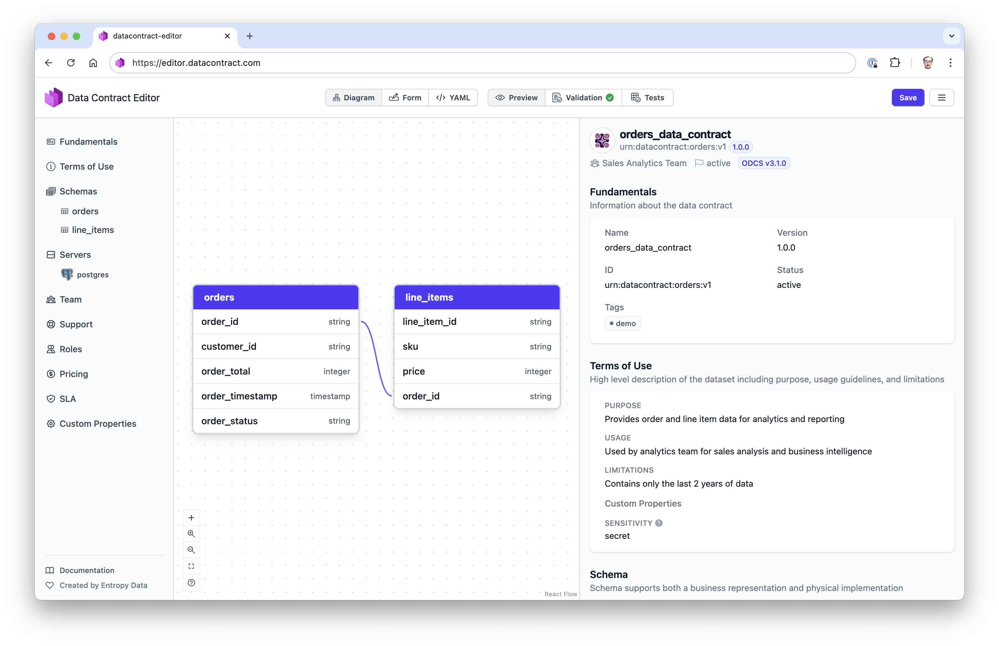
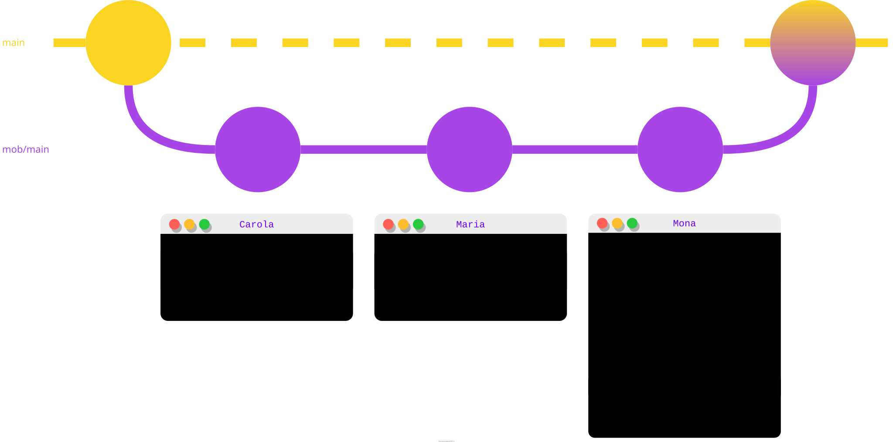
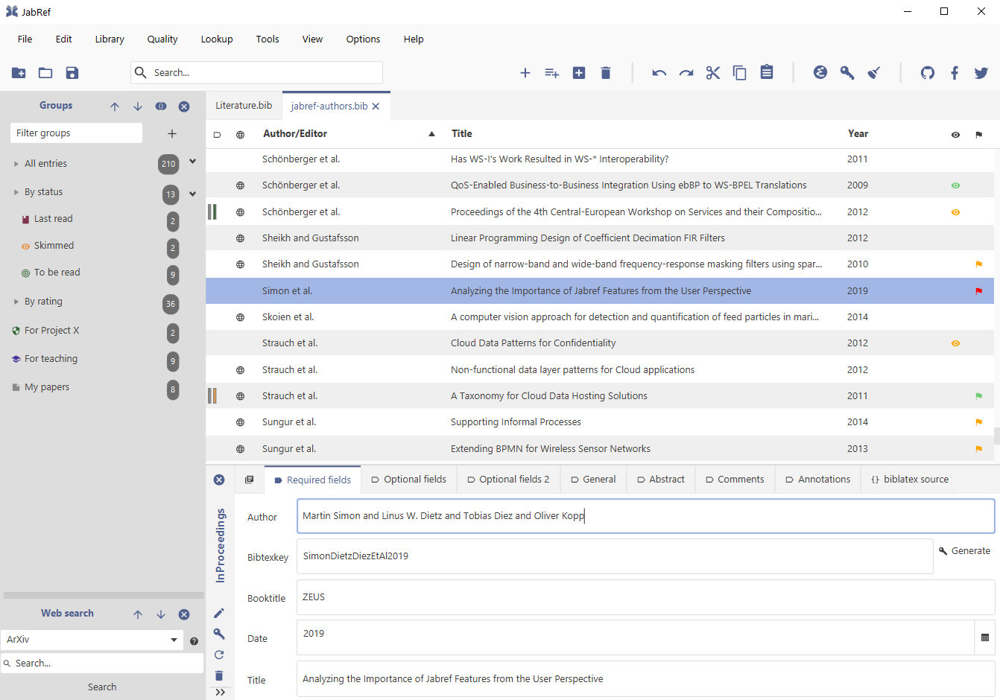

Open Source
Open source tools I've created, maintain, or have helped to maintain.

Data Landscape 10+ stars
An opinionated, interactive map of the open standards that power a modern data architecture — ODCS, ODPS, OSI, OpenAPI, Iceberg, OpenLineage, OpenTelemetry and more.
Created in 2026
Curated by Simon at Entropy Data
Explore at data-landscape.com.

Data Contract CLI Thoughtworks Tech Radar 850+ stars
A CLI tool to validate, test, document, and export data contracts based on the Open Data Contract Standard. Supports 15+ data sources including Snowflake, Databricks, BigQuery, and Postgres.
Created in 2023
Co-maintained with Jochen Christ
Also on datacontract.com and PyPI.

Data Contract Editor 80+ stars
Web-based visual editor for ODCS data contracts. Authoring, validation, and previewing in the browser — no install required.
Created in 2024
Co-maintained with Jochen Christ
Try it at editor.datacontract.com.
Earlier projects

mob.sh Thoughtworks Tech Radar 1.7k+ stars
A CLI tool that makes swap turns in (remote) mob and pair programming a one-liner. Used daily by developers around the world.
Created by Simon in 2018, maintained 2018–2026
Now maintained by Gregor Riegler & Joshua Töpfer
More on mob.sh.

JabRef 4.3k+ stars
An open-source bibliography reference manager for researchers, using BibTeX as its native format. Available for Windows, Linux, and macOS.
Created in 2003 (not by Simon)
Co-maintained by Simon 2014–2017 — no longer active
More on jabref.org.